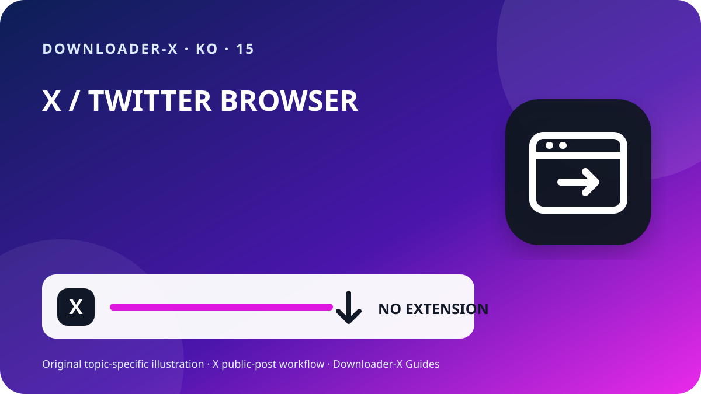

빠른 답변
별도 앱 없이 트위터 동영상 다운 — 본인이 소유했거나 저장 허가를 받은 공개 X 동영상이라면 해당 게시물을 개별 페이지로 열고 공유 메뉴에서 게시물 링크를 복사하세요. URL을 Downloader-X에 붙여 넣고 결과에 실제로 나타나는 MP4 옵션을 선택한 다음 저장된 파일의 처음, 중간, 끝을 재생해 영상과 소리를 확인합니다. 공개 링크 처리에는 X 비밀번호, 인증 코드, 브라우저 쿠키 또는 원격 제어가 필요하지 않습니다. 이런 정보를 요구하는 페이지에서는 작업을 중단하세요.

Downloader-X 사용 3단계
- 입력 링크는 동영상이 포함된 한 게시물을 정확히 가리켜야 합니다. X의 공유 메뉴에서 게시물 링크 복사를 선택하고 새 탭에서 한 번 열어 목적지를 확인하세요. 프로필이나 타임라인 URL은 여러 게시물을 포함하므로 대상 동영상을 지정하지 못합니다. 이 사전 확인은 잘못된 링크와 서비스 오류를 구분하고 불완전한 파일을 반복해서 만드는 일을 줄여 줍니다.
- 검증한 URL을 X 다운로드 페이지에 붙여 넣고 처리는 한 번만 시작합니다. 실제 옵션이 나타날 때까지 기다린 뒤 제목이나 미리보기가 원본과 일치하는지 확인하세요. 결과에 표시된 형식과 해상도만 선택해야 합니다. 원본이 제공하지 않는 4K나 1080p를 마케팅 문구만 보고 기대해서는 안 됩니다. 실패한 경우에는 명확한 오류가 보여야 하며 HTML 페이지, 설치 프로그램 또는 잘못된 파일을 성공한 동영상으로 표시해서는 안 됩니다.
- 진행 표시가 사라진 것만으로는 완료가 아닙니다. 파일이 실제 동영상으로 열리는지 확인한 뒤 보관하거나 공유하세요.
이 검색어의 실제 의미
별도 앱 없이 트위터 동영상 다운. 공개 게시물만 지원합니다. 형식과 화질은 원본에서 실제로 제공되는 옵션에 따라 달라집니다.
2. 정확한 게시물 URL 복사
입력 링크는 동영상이 포함된 한 게시물을 정확히 가리켜야 합니다. X의 공유 메뉴에서 게시물 링크 복사를 선택하고 새 탭에서 한 번 열어 목적지를 확인하세요. 프로필이나 타임라인 URL은 여러 게시물을 포함하므로 대상 동영상을 지정하지 못합니다. 이 사전 확인은 잘못된 링크와 서비스 오류를 구분하고 불완전한 파일을 반복해서 만드는 일을 줄여 줍니다.
원본 동영상 게시물을 열고 개별 게시물 페이지로 이동합니다.
공유 메뉴에서 링크를 복사하고 URL을 직접 입력하지 않습니다.
x.com 또는 twitter.com의 게시물 주소인지 확인합니다.
새 탭에서 계정, 본문, 썸네일과 동영상을 비교합니다.
출처 URL과 허가 기록을 저장 파일과 함께 보관합니다.
3. URL을 붙여 넣고 실제 결과만 선택
검증한 URL을 X 다운로드 페이지에 붙여 넣고 처리는 한 번만 시작합니다. 실제 옵션이 나타날 때까지 기다린 뒤 제목이나 미리보기가 원본과 일치하는지 확인하세요. 결과에 표시된 형식과 해상도만 선택해야 합니다. 원본이 제공하지 않는 4K나 1080p를 마케팅 문구만 보고 기대해서는 안 됩니다. 실패한 경우에는 명확한 오류가 보여야 하며 HTML 페이지, 설치 프로그램 또는 잘못된 파일을 성공한 동영상으로 표시해서는 안 됩니다.
5. iPhone, Android, Windows와 Mac에 저장
iPhone과 iPad에서 Safari 다운로드는 보통 파일 앱의 다운로드 폴더나 설정한 위치에 있습니다. Android에서는 브라우저 다운로드 목록이나 Files 앱을 확인하세요. Windows, macOS, Linux와 ChromeOS에서는 다시 누르기 전에 다운로드 폴더와 브라우저 기록을 봅니다. 공간이 부족하면 불필요한 복사본을 지우거나 더 낮은 해상도를 선택하세요. 한 페이지가 필수라고 주장하더라도 출처를 알 수 없는 다운로드 관리자나 확장 프로그램을 설치하지 마세요.
보안과 개인정보 보호
공개 링크 처리에는 X 비밀번호, 이중 인증 코드, 내보낸 쿠키, 원격 제어, 실행 설치 파일 또는 보안 기능 해제가 필요하지 않습니다. .exe, .dmg 또는 동영상과 무관한 확장을 제공하는 페이지에서는 중단하세요. 열기 전에 도메인, 파일 형식과 출처를 확인합니다. 공유 기기에서는 허가된 파일을 공개 폴더에서 옮기고 불필요한 임시 사본을 삭제하세요.
원본에서 파일까지 순서대로 문제 해결
동영상 게시물로 돌아가 공유에서 URL을 복사하세요. 프로필은 하나의 미디어를 지정하지 않습니다.
보호 또는 제한 콘텐츠일 수 있습니다. 자격 증명이나 쿠키를 제공하지 말고 허가된 사본을 요청하세요.
게시물이 존재하고 기본 동영상을 포함하며 복사한 URL로 열리는지 확인한 뒤 한 번 새로고침합니다.
파일을 삭제하고 확장자를 바꾸지 말며 URL과 실제 동영상 옵션을 다시 확인합니다.
원본과 기기 음량, 다른 신뢰할 수 있는 플레이어를 확인하고 필요하면 오디오 포함 옵션을 고릅니다.
6. 저장 파일 검증
진행 표시가 사라진 것만으로는 완료가 아닙니다. 파일이 실제 동영상으로 열리는지 확인한 뒤 보관하거나 공유하세요.
선택한 형식과 일치하며 MP4 등 동영상이지 HTML이나 설치 파일이 아닙니다.
크기가 0이 아니고 재생 시간과 화질에 비해 비정상적이지 않습니다.
처음, 중간, 끝에서 영상, 길이와 소리가 정상입니다.
파일명, 폴더, 출처 URL, 허가 또는 라이선스를 기록했습니다.
파일 정리와 중복 방지
파일명에 짧은 주제, 계정, 날짜와 화질을 포함할 수 있습니다. 예: topic_creator_2026-08-30_720p.mp4. 임시 폴더와 검증된 폴더를 분리하고 필요한 화질만 남기세요. 여러 번 클릭해도 화질은 향상되지 않고 중복 또는 부분 파일만 생길 수 있습니다. 출처 URL, 크레딧과 사용 조건을 같은 프로젝트의 메모나 스프레드시트에 보관합니다.
1. 공개 상태와 사용 권한 확인
프로필, 검색 결과, 캡처 이미지나 전달된 미리보기가 아니라 원본 게시물에서 시작합니다. URL을 새 탭에 열어 계정, 본문, 썸네일과 재생 시간이 일치하는지 확인하세요. 공개적으로 보인다는 사실은 재업로드, 편집, 판매 또는 광고 사용을 자동으로 허용하지 않습니다. 보호 계정, 삭제된 게시물, 특별 로그인이 필요한 콘텐츠, 지역 또는 연령 제한이 있는 경우 접근 제어를 우회하지 말고 소유자에게 허가된 사본을 요청해야 합니다.
공개 표시는 접근 설정이지 이용 허락이 아닙니다. 본인 소유, 호환 라이선스 또는 명확한 허가가 있는 동영상만 저장하세요. 재게시, 편집 또는 상업적 이용을 하려면 해당 용도가 허가 범위에 포함되는지 확인하고 문서로 보관합니다. 개인 정보, 사적인 장소, 미성년자가 등장하는 경우 공개 게시물이라도 동의와 개인정보를 신중히 다루고 다른 사람의 작업을 자신의 것으로 표시하지 마세요.
장기 보관 전 출처 기록
여러 클립을 다루는 프로젝트라면 계정, 게시 날짜, 영구 URL, 짧은 설명, 선택한 화질, 파일 크기와 저장 권한의 근거를 기록하세요. 이렇게 하면 출처 없는 파일을 방지하고 나중에 크레딧과 라이선스를 검토할 수 있습니다. 인용 게시물, 답글 또는 스레드에서는 단순히 동영상을 언급하는 게시물이 아니라 실제 동영상을 포함한 게시물의 URL을 복사해야 합니다.
4. 원본과 용도에 맞는 HD 선택
HD 표시는 공개 게시물에서 실제로 제공되는 미디어 변형을 기준으로 해야 합니다. 휴대전화와 노트북에서는 720p가 선명도, 데이터와 저장 공간의 균형을 맞추기 좋고, 1080p는 원본이 제공하며 큰 화면에서 세부 정보가 필요할 때 적합합니다. 같은 해상도라도 비트레이트, 코덱과 압축 정도가 달라 보이는 품질이 다를 수 있으므로 파일 이름만 보지 말고 재생하세요. 소리가 필요하면 영상과 오디오가 포함된 옵션을 선택하고 저장 직후 트랙을 확인합니다.
잘못된 결과를 막는 확인 사항
X 실전 가이드 · 1
진행 표시가 사라진 것만으로는 완료가 아닙니다. 파일이 실제 동영상으로 열리는지 확인한 뒤 보관하거나 공유하세요.
공개 링크 처리에는 X 비밀번호, 이중 인증 코드, 내보낸 쿠키, 원격 제어, 실행 설치 파일 또는 보안 기능 해제가 필요하지 않습니다. .exe, .dmg 또는 동영상과 무관한 확장을 제공하는 페이지에서는 중단하세요. 열기 전에 도메인, 파일 형식과 출처를 확인합니다. 공유 기기에서는 허가된 파일을 공개 폴더에서 옮기고 불필요한 임시 사본을 삭제하세요.
게시물이 존재하고 기본 동영상을 포함하며 복사한 URL로 열리는지 확인한 뒤 한 번 새로고침합니다.
크기가 0이 아니고 재생 시간과 화질에 비해 비정상적이지 않습니다.
같은 공개 게시물로 연결되고 새 탭에서 목적지를 확인했다면 사용할 수 있습니다.
보호 또는 제한 콘텐츠일 수 있습니다. 자격 증명이나 쿠키를 제공하지 말고 허가된 사본을 요청하세요.
iPhone과 iPad에서 Safari 다운로드는 보통 파일 앱의 다운로드 폴더나 설정한 위치에 있습니다. Android에서는 브라우저 다운로드 목록이나 Files 앱을 확인하세요. Windows, macOS, Linux와 ChromeOS에서는 다시 누르기 전에 다운로드 폴더와 브라우저 기록을 봅니다. 공간이 부족하면 불필요한 복사본을 지우거나 더 낮은 해상도를 선택하세요. 한 페이지가 필수라고 주장하더라도 출처를 알 수 없는 다운로드 관리자나 확장 프로그램을 설치하지 마세요.
X 실전 가이드 · 2
아니요. 이 가이드는 공개 게시물만 다루며 제한 우회를 지원하지 않습니다.
파일명에 짧은 주제, 계정, 날짜와 화질을 포함할 수 있습니다. 예: topic_creator_2026-08-30_720p.mp4. 임시 폴더와 검증된 폴더를 분리하고 필요한 화질만 남기세요. 여러 번 클릭해도 화질은 향상되지 않고 중복 또는 부분 파일만 생길 수 있습니다. 출처 URL, 크레딧과 사용 조건을 같은 프로젝트의 메모나 스프레드시트에 보관합니다.
새 탭에서 계정, 본문, 썸네일과 동영상을 비교합니다.
삭제하고 확장자를 바꾸지 말며 URL과 동영상 옵션을 다시 확인하세요.
공개 표시는 접근 설정이지 이용 허락이 아닙니다. 본인 소유, 호환 라이선스 또는 명확한 허가가 있는 동영상만 저장하세요. 재게시, 편집 또는 상업적 이용을 하려면 해당 용도가 허가 범위에 포함되는지 확인하고 문서로 보관합니다. 개인 정보, 사적인 장소, 미성년자가 등장하는 경우 공개 게시물이라도 동의와 개인정보를 신중히 다루고 다른 사람의 작업을 자신의 것으로 표시하지 마세요.
x.com 또는 twitter.com의 게시물 주소인지 확인합니다.
파일명, 폴더, 출처 URL, 허가 또는 라이선스를 기록했습니다.
X 실전 가이드 · 3
HD 표시는 공개 게시물에서 실제로 제공되는 미디어 변형을 기준으로 해야 합니다. 휴대전화와 노트북에서는 720p가 선명도, 데이터와 저장 공간의 균형을 맞추기 좋고, 1080p는 원본이 제공하며 큰 화면에서 세부 정보가 필요할 때 적합합니다. 같은 해상도라도 비트레이트, 코덱과 압축 정도가 달라 보이는 품질이 다를 수 있으므로 파일 이름만 보지 말고 재생하세요. 소리가 필요하면 영상과 오디오가 포함된 옵션을 선택하고 저장 직후 트랙을 확인합니다.
동영상 게시물로 돌아가 공유에서 URL을 복사하세요. 프로필은 하나의 미디어를 지정하지 않습니다.
프로필, 검색 결과, 캡처 이미지나 전달된 미리보기가 아니라 원본 게시물에서 시작합니다. URL을 새 탭에 열어 계정, 본문, 썸네일과 재생 시간이 일치하는지 확인하세요. 공개적으로 보인다는 사실은 재업로드, 편집, 판매 또는 광고 사용을 자동으로 허용하지 않습니다. 보호 계정, 삭제된 게시물, 특별 로그인이 필요한 콘텐츠, 지역 또는 연령 제한이 있는 경우 접근 제어를 우회하지 말고 소유자에게 허가된 사본을 요청해야 합니다.
검증한 URL을 X 다운로드 페이지에 붙여 넣고 처리는 한 번만 시작합니다. 실제 옵션이 나타날 때까지 기다린 뒤 제목이나 미리보기가 원본과 일치하는지 확인하세요. 결과에 표시된 형식과 해상도만 선택해야 합니다. 원본이 제공하지 않는 4K나 1080p를 마케팅 문구만 보고 기대해서는 안 됩니다. 실패한 경우에는 명확한 오류가 보여야 하며 HTML 페이지, 설치 프로그램 또는 잘못된 파일을 성공한 동영상으로 표시해서는 안 됩니다.
여러 클립을 다루는 프로젝트라면 계정, 게시 날짜, 영구 URL, 짧은 설명, 선택한 화질, 파일 크기와 저장 권한의 근거를 기록하세요. 이렇게 하면 출처 없는 파일을 방지하고 나중에 크레딧과 라이선스를 검토할 수 있습니다. 인용 게시물, 답글 또는 스레드에서는 단순히 동영상을 언급하는 게시물이 아니라 실제 동영상을 포함한 게시물의 URL을 복사해야 합니다.
자주 묻는 질문
별도 앱 없이 트위터 동영상 다운?
공개 게시물만 지원합니다. 형식과 화질은 원본에서 실제로 제공되는 옵션에 따라 달라집니다.
HTML 파일을 받으면 어떻게 하나요?
삭제하고 확장자를 바꾸지 말며 URL과 동영상 옵션을 다시 확인하세요.
보호 계정 동영상을 저장할 수 있나요?
아니요. 이 가이드는 공개 게시물만 다루며 제한 우회를 지원하지 않습니다.
x.com과 twitter.com 링크를 모두 쓸 수 있나요?
같은 공개 게시물로 연결되고 새 탭에서 목적지를 확인했다면 사용할 수 있습니다.
공개 게시물을 바로 재업로드해도 되나요?
아니요. 재배포와 예정된 사용을 허용하는 라이선스 또는 허가가 필요합니다.
관련 X 가이드
정확한 공개 게시물 링크 사용
공개 게시물만 지원합니다. 형식과 화질은 원본에서 실제로 제공되는 옵션에 따라 달라집니다.
Downloader-X 열기